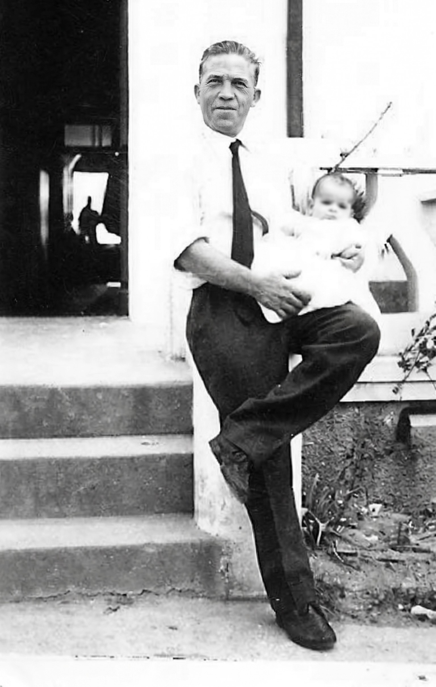

-
 Pai de AntónioAntónio Baptista(❤ N. 27/12/1865 / †) 💍 Casou a 02/09/1889
Pai de AntónioAntónio Baptista(❤ N. 27/12/1865 / †) 💍 Casou a 02/09/1889 Mãe de AntónioMaria de Jesus Teixeira(❤ N. Meados/1868 / †)
Mãe de AntónioMaria de Jesus Teixeira(❤ N. Meados/1868 / †)-

PatriarcaAntónio BaptistaN.1894 - Falecido
📍 Lubango, Angola CônjugeMaria José BaptistaFalecida
CônjugeMaria José BaptistaFalecida-
 FilhoAntónio Baptista Júnior📍 Lubango, Angola
FilhoAntónio Baptista Júnior📍 Lubango, Angola CônjugeMaria José Lucas Baptista💍 Casados
CônjugeMaria José Lucas Baptista💍 Casados-
NetoAntónio de Freitas Batista📍 Localização
CônjugeOlga Maria Paulino💍 Casados
-
BisnetaPaula Batista📍 Localização
-
-
NetoAntónio José Baptista📍 Localização
CônjugeFrancisca M. Augusta💍 Casados
-
BisnetaKaymara C. A. Baptista da Costa📍 Localização
-
-
NetoAntónio Júnior
-
BisnetaAna Paula Santos Duarte📍 Localização
-
-
-
FilhaMaria Ivone Baptista Mendonça† Falecida
📍 Lubango, Angola
CônjugeJosé de Paiva Mendonça† Falecido
💍 Casados-
NetaIvone Maria Baptista Mendonça📍 Localização
-
BisnetoMiguel Ângelo Pinto📍 Localização
-
BisnetoRafael Ruben Pinto📍 Localização
-
BisnetoQuintin Heirebaudt📍 Localização
-
-
NetoCarlos Alberto Baptista Mendonça❤ N. 1955
† Falecido -
NetaMaria da Conceição Baptista Mendonça📍 Localização
-
NetoÓscar Fernando Baptista Mendonça📍 Localização
-
NetaAna Maria📍 Localização
-
NetaElsa Maria📍 Localização
-
-
-